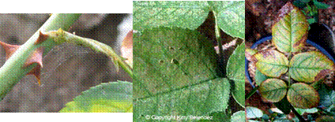

| Home |
| PEST OF ROSE |
mAJOR PESTES |
| 1. Rose thrips |
| 2. Red scale |
| 3. Red spider mite |
| 4. Rose aphid/lice |
mINOR PESTES |
| 1. Hairy caterpillar |
| 2. Castor semilooper |
| 3. Flower chaffer beetle |
| 4. Leaf folder |
| 5. Leaf cutting bee |
| Questions |
| Download Notes |
ROSE :: MAJOR PEST :: PESTS OF ROSE
3. Red spider mite: Tetranychus cinnabarinus (Tetranychidae: Acarina)
Damage symptoms : Nymphs and adults feed on the undersurface of the leaves and are found covered with silken webs. As a result, yellow spots appear on the upper surface, which gradually turn reddish. Affected leaves finally wither away. Growth and flower production are adversely affected.
|  |
Bionomics :
Both nymphs and adults are red in colour. About 200 whitish, spherical eggs laid on the ventral surface of the leaves and measure about 0.1 mm in diameter. Egg period 4-7 days, larval and pupal periods 3-5 and 8-12 days respectively. Life cycle is completed in 15-20 days and there are 15 generations / year.
Management :
Prefer Spinx and temptation varieties as they are moderately susceptible
Avoid First Red as it is highly susceptible.
Remove and destroy the damaged leaves along with mites.
Spray Flufenoxuron 10 DC 500 ml or milbemectin 1 EC 450 ml in 500 L of water per ha or bifenazate 50 WP 375 ml kg in 750 L of water per ha or wettable sulphur 40 WP 3.75 kg in 500 -1000 L of water per ha.